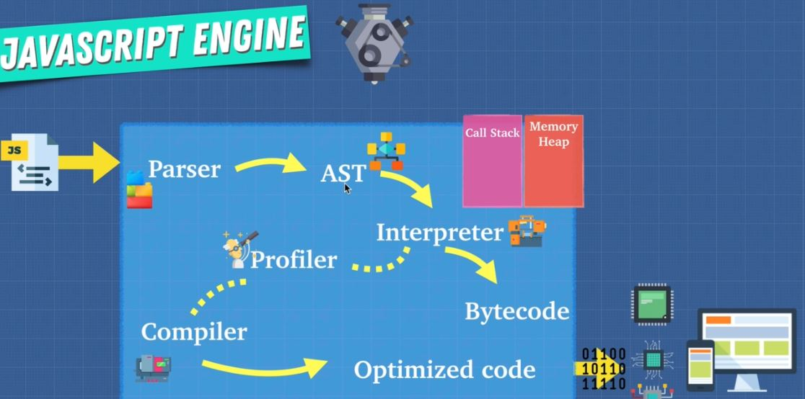

Diffference between Execution stack and Scope Chain
Javascript Engine In detail

Important Links
Call Backs (Passing function as an argument to another function)
Closures
Bind,Call and apply
Currying
Asynchrnous Programming
AST explorer
Babel is a Javascript compiler that takes your modern JS code and returns
browser compatible JS (older JS code).
Typescript is a superset of Javascript that compiles down to Javascript.
Both of these do exactly what compilers do: Take one language and
convert into a different one!
InterPreter : With interpreter we translate and read the files line by line on the fly.